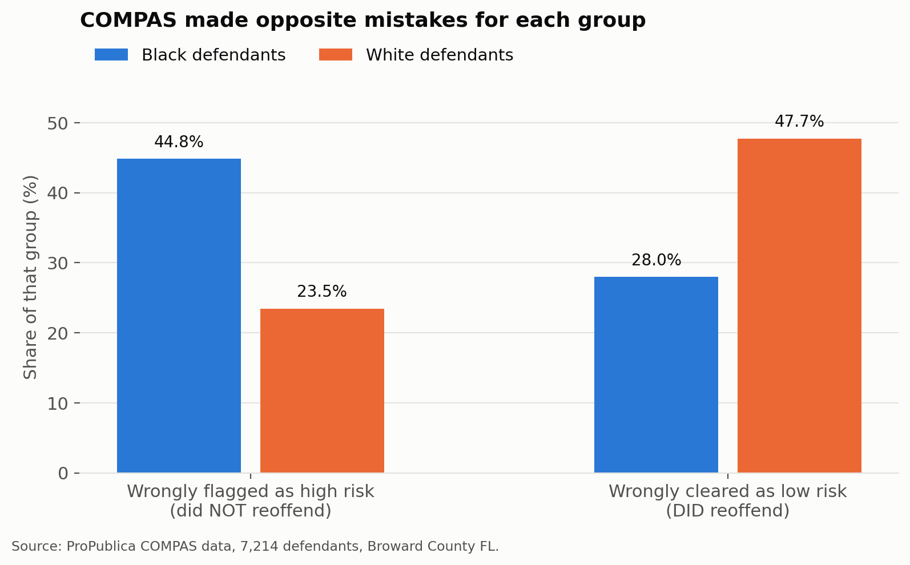
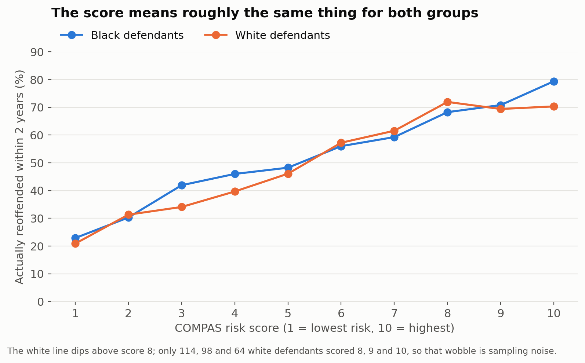

Executive summary. The 2016 dispute over the COMPAS recidivism score was not a disagreement about facts. ProPublica found that the errors of the score fall disproportionately on Black defendants. Northpointe found that the score is equally predictive across groups. Both findings replicate exactly against the published data. They are compatible because they measure different properties. Where group base rates differ these properties cannot both be satisfied. The observed disparity is therefore not an artefact of model construction and would not be removed by a better model.
COMPAS assigns criminal defendants a risk score from 1 to 10, which courts use to inform bail and sentencing decisions. In 2016 ProPublica concluded the instrument was biased against Black defendants and the vendor published a rebuttal concluding it was not. The argument that followed treated the two positions as contradictory. This report tests whether they are.
The analysis uses the public ProPublica release of 7,214 defendants screened in Broward County, Florida between 2013 and 2014, with re-arrest outcomes observed over two years. Following the original specification, risk categories are collapsed into a binary prediction in which Medium and High count as flagged. Every figure below was validated cell by cell against the published contingency tables of the source analysis, and that verification is scripted so it fails on any drift. A secondary specification applying the 30 day arrest to screening filter is reported as a robustness check. The measured disparity is 1.9 times under both.
Among defendants who did not reoffend, 44.8 percent of Black defendants were flagged high risk compared with 23.5 percent of white defendants. The asymmetry inverts for the complementary error. Among defendants who did reoffend, 47.7 percent of white defendants were classified low risk compared with 28.0 percent of Black defendants.
Each error type falls predominantly on a different group. In a custodial context the two errors do not carry equivalent costs.

Conditional on score, outcomes are close to identical across groups. Positive predictive value is 0.63 for Black defendants and 0.59 for white defendants. Reoffence rates by decile track one another across the full scale.
By the calibration standard advanced in the rebuttal the instrument is defensible. It does not systematically overstate risk for either group.

False positive rate, positive predictive value, false negative rate and prevalence are related by identity:
FPR = ( p / (1 − p) ) × ( (1 − PPV) / PPV ) × ( 1 − FNR )
Any three of these quantities determine the fourth. Base rates in this population are 51.4 percent and 39.4 percent. Imposing equal positive predictive value and equal false negative rate across groups therefore still produces a false positive disparity of 1.63 times. In the ratio of the two false positive rates the PPV and FNR terms cancel. What remains is exactly the base rate odds ratio, which is a property of the populations and is invariant to the choice of operating point. This was confirmed across 800 parameter combinations.
Fairness is not a single quantity available for optimisation. Equal predictive value and equal error rates are competing definitions. Selecting between them determines which error a system prefers to make and therefore who bears the cost of it. That selection is a policy judgement. Assigning it to model development conceals the decision rather than resolving it, and leaves an accountable choice embedded in a technical artefact.